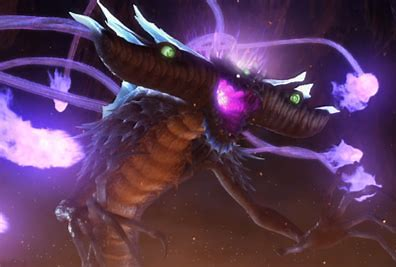

Prólogo
Tudo começa nos inicios dos tempos, onde a terra ja existia e foram criados 2 seres, Dark Gaia e Light Gaia, o bem e o mal, a luz e a escuridão. Esses seres por sua vez lutavam pelo bem que acreditavam, porem acabariam selados dentro do planeta para manter o equilibrio, com a lenda de que algum dia voltariam para lutar novamente.
Algum tempo depois em uma planeta muito distante havia uma raça alienigina muito avançada que acabaria sendo expulsa de seu planeta natal por uma calamidade chamada The End, que acabariam chegando na terra e trazendo as esmeraldas dos chaos, The End os segue e eles travam uma guerra onde prendem The End no cyber espaço, assim o selando.